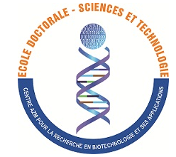

| # | Student Name | Specialization | Level | Topic | Report |
|---|---|---|---|---|---|
| 1 | Aya Mayssara El Assaad | Biotechnologie | PhD | Python-Based Computational Analysis of Natural Extracts in Colorectal Cancer Research | View Report |
| 2 | Hasna Fawaz Abbass | Microbiologie | PhD | -Biofilm, Virulence Factors, CSH Analysis, Sequence Alignment, and Phylogenetic Tree of Candida Isolates -DNA Sequence Analysis: GC Content, Motif Detection, and Structural Characterization of Candida Species |
View Report1 View Report2 |
| 3 | Fatima Darwich Fayad | Microbiologie | PhD | Brucella Epidemiology and Phylogenetic Analysis Using Python | View Report |
| 4 | Rima Omar Jaber | Molecules Bioactives | PhD | Phylogenetic Analysis of Scorpion Toxins and Data Visualization of Hemolytic test | View Report |
| 5 | Hoda Helene Ahmad Shahin | Microbiologie | PhD | Application of Python-Based Statistical Analysis for Essential Oils: Extraction Yield, Antibacterial Activity, FICI Synergy, and Evaluation in a Dairy Matrix | View Report |
| 6 | Aysha Mohamad Sayyed | Microbiologie | PhD | — | View Report |
| 7 | Salam Omar Zoabi | Biotechnologie | Master | Impact of Cancer-Associated Mutations on DNA Sequence Composition of different species ( human,rat,mouse,mutant) | View Report |
| 8 | Norhan Fadel Massri | Biotechnologie | Master | Impact of Cancer-Associated Mutations on DNA Sequence Composition of different species ( human,rat,mouse,mutant) | View Report |
| 9 | Joudi Amer Hantour | Biotechnologie | Master | Impact of Cancer-Associated Mutations on DNA Sequence Composition of different species ( human,rat,mouse,mutant) | View Report |
| 10 | Rim Ahmad Ali El Mir | Microbiologie | Master | Application of Python-Based Statistical Analysis for Essential Oils: Extraction Yield, Antibacterial Activity, FICI Synergy, and Evaluation in a Dairy Matrix | View Report |
| 11 | Assma Walid Allouch | Microbiologie | Master | — | View Report | 12 | Nazih Fawaz Lazkani | Microbiologie | Master | — | View Report |